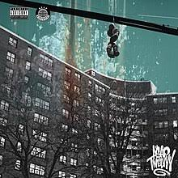

The A$AP is a rap collective that is based out of New York City. The Mob Features a bunch of of solo artists like A$AP Rocky, Ferg, Twelvyy, and Nast. Every year they collaberate to commerate the leader of the A$AP Mob, A$AP Yams who died in 2015. They call these collection of albums "The Cozy Tapes." Both of the currently existing Cozy Tapes feature a multitude of artits.

5/10
I would give this album 5/10 because of how lacking it has been in comaprison to A$AP Twelvyy's peers in the Mob. Very decent at the very least.
12 dropped in August of 2017, which was the debut album of A$AP Mob's latest addition in terms of solo albums. This album was very decent and really was nnot bad at all for Twelvyy's first, but was a let down in comaprison to both Ferg and Rocky shich show greater skill and styler. This shows potential though as his next album realy could be a great work.